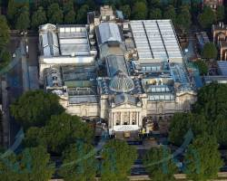

Una de las grandes atracciones de Londres son sus innumerables museos. Los más importante museos fueron creados
para la educación y el entretenimiento del pueblo y por ese motivo siguen siendo gratuitos.
The British Museum
El Museo Británico se fundó en 1735 y alberga antigüedades procedentes de Egipto, Roma, Grecia, Oriente
Próximo y Asia. El edificio se empezó a construir en 1824, fue diseñado por Robert Smirke y hasta 1997
también era la sede de la Biblioteca Británica. Seguramente sólo haya dos museos en el mundo comparables en
la variedad y riqueza de sus colecciones: el Louvre de París y el Metropolitan de Nueva York.

Tate Britain
En 1897 se abrió al público, al sur de Westminster, la Galería Nacional de Arte Británico, gracias al dinero
aportado por Henry Tate, magnate del azúcar y coleccionista. En 1932 el museo pasó a llamarse Tate Gallery.
En 2000 el museo inaguró la Tate Modern, una nueva sede situada frente a la Catedral de San Pablo. La Tate
Gallery pasó a llamarse Tate Britain y alberga importantes colecciones como las dedicadas a William Turner o
a Henry Moore.
The National Gallery
La National Gallery alberga la más importante colección inglesa de pintura de los siglos XV al XIX. Fue
creada en 1824 a partir de donaciones y compras a coleccionistas particulares y desde 1838 tiene su sede en
Trafalgar Square. Esta plaza está dedicada a una de las victorias más importantes de la Armada inglesa, la
batalla de Trafalgar de 1805, frente a las flotas francesa y española. En el centro de la plaza se encuentra
la columna de Nelson, que dirigió la flota inglesa en esa batalla y falleció en ella.
Natural History Museum
En el siglo XVII el Museo Británico albergaba colecciones de animales y plantas, pero en desastrosas
condiciones.Para resolver la situación, en 1881 se abrió la sede actual del Museo de Historia Natural, un
magnífico edificio de ladrillo de terracota, característico de la época victoriana. En sus inmediaciones se
encuentran también el museo de la Ciencia, el museo de Arte y Diseño, varias reales academias de arte y
ciencia y la famosa sala de conciertos Royal Albert Hall.